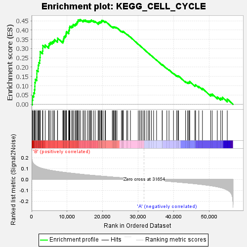

| | | Dataset | my.my.cls#B_versus_A.my.cls#B_versus_A_repos |
| Phenotype | my.cls#B_versus_A_repos |
| Upregulated in class | B |
| GeneSet | KEGG_CELL_CYCLE |
| Enrichment Score (ES) | 0.45631197 |
| Normalized Enrichment Score (NES) | 1.3845869 |
| Nominal p-value | 0.21386139 |
| FDR q-value | 0.48338935 |
| FWER p-Value | 0.874 |
Table: GSEA Results Summary

Fig 1: Enrichment plot: KEGG_CELL_CYCLE
Profile of the Running ES Score & Positions of GeneSet Members on the Rank Ordered List
| SYMBOL | TITLE | RANK IN GENE LIST | RANK METRIC SCORE | RUNNING ES | CORE ENRICHMENT | | 1 | MAD2L2 | na | 192 | 0.167 | 0.0223 | Yes |
| 2 | CHEK2 | na | 299 | 0.157 | 0.0446 | Yes |
| 3 | CDKN1C | na | 584 | 0.142 | 0.0615 | Yes |
| 4 | ABL1 | na | 823 | 0.135 | 0.0779 | Yes |
| 5 | YWHAQ | na | 907 | 0.132 | 0.0968 | Yes |
| 6 | CDKN2D | na | 917 | 0.132 | 0.1170 | Yes |
| 7 | E2F1 | na | 1048 | 0.129 | 0.1345 | Yes |
| 8 | TGFB2 | na | 1457 | 0.120 | 0.1458 | Yes |
| 9 | CDC25B | na | 1474 | 0.120 | 0.1639 | Yes |
| 10 | TGFB1 | na | 1477 | 0.120 | 0.1823 | Yes |
| 11 | TFDP2 | na | 1833 | 0.114 | 0.1935 | Yes |
| 12 | TGFB3 | na | 1848 | 0.114 | 0.2108 | Yes |
| 13 | SMC3 | na | 2035 | 0.111 | 0.2245 | Yes |
| 14 | CDK4 | na | 2264 | 0.108 | 0.2371 | Yes |
| 15 | CDK2 | na | 2335 | 0.107 | 0.2524 | Yes |
| 16 | CDKN1B | na | 2405 | 0.107 | 0.2676 | Yes |
| 17 | WEE2 | na | 2406 | 0.107 | 0.2840 | Yes |
| 18 | YWHAG | na | 3074 | 0.100 | 0.2875 | Yes |
| 19 | ORC6 | na | 3145 | 0.099 | 0.3016 | Yes |
| 20 | RBL1 | na | 3150 | 0.099 | 0.3168 | Yes |
| 21 | BUB3 | na | 3817 | 0.094 | 0.3194 | Yes |
| 22 | YWHAH | na | 4812 | 0.087 | 0.3152 | Yes |
| 23 | ANAPC2 | na | 4897 | 0.086 | 0.3269 | Yes |
| 24 | PCNA | na | 5277 | 0.084 | 0.3332 | Yes |
| 25 | DBF4 | na | 5780 | 0.081 | 0.3367 | Yes |
| 26 | E2F3 | na | 6185 | 0.079 | 0.3417 | Yes |
| 27 | SKP2 | na | 6460 | 0.077 | 0.3488 | Yes |
| 28 | ZBTB17 | na | 7266 | 0.074 | 0.3458 | Yes |
| 29 | BUB1B | na | 7311 | 0.073 | 0.3563 | Yes |
| 30 | CDK1 | na | 8770 | 0.067 | 0.3408 | Yes |
| 31 | ORC3 | na | 8927 | 0.066 | 0.3482 | Yes |
| 32 | ORC2 | na | 9029 | 0.066 | 0.3565 | Yes |
| 33 | CDC45 | na | 9152 | 0.065 | 0.3644 | Yes |
| 34 | CDKN2C | na | 9435 | 0.064 | 0.3693 | Yes |
| 35 | SMC1A | na | 9666 | 0.063 | 0.3749 | Yes |
| 36 | WEE1 | na | 9720 | 0.063 | 0.3837 | Yes |
| 37 | GADD45G | na | 9827 | 0.062 | 0.3914 | Yes |
| 38 | RBX1 | na | 10431 | 0.060 | 0.3899 | Yes |
| 39 | CDC6 | na | 10448 | 0.060 | 0.3989 | Yes |
| 40 | ANAPC11 | na | 10611 | 0.059 | 0.4051 | Yes |
| 41 | CUL1 | na | 10646 | 0.059 | 0.4137 | Yes |
| 42 | CDC16 | na | 10769 | 0.059 | 0.4205 | Yes |
| 43 | CCND1 | na | 11255 | 0.057 | 0.4207 | Yes |
| 44 | GADD45B | na | 11577 | 0.056 | 0.4236 | Yes |
| 45 | PTTG1 | na | 11688 | 0.055 | 0.4302 | Yes |
| 46 | CDKN2B | na | 12186 | 0.054 | 0.4297 | Yes |
| 47 | CDC26 | na | 12409 | 0.053 | 0.4339 | Yes |
| 48 | MCM2 | na | 12685 | 0.052 | 0.4370 | Yes |
| 49 | CCNB3 | na | 12781 | 0.052 | 0.4432 | Yes |
| 50 | ESPL1 | na | 13005 | 0.051 | 0.4471 | Yes |
| 51 | PTTG2 | na | 13070 | 0.050 | 0.4537 | Yes |
| 52 | SKP1 | na | 13410 | 0.049 | 0.4553 | Yes |
| 53 | EP300 | na | 13769 | 0.048 | 0.4563 | Yes |
| 54 | CHEK1 | na | 14440 | 0.046 | 0.4515 | No |
| 55 | CDC25C | na | 14744 | 0.045 | 0.4530 | No |
| 56 | ANAPC13 | na | 15117 | 0.044 | 0.4531 | No |
| 57 | SMC1B | na | 15703 | 0.042 | 0.4492 | No |
| 58 | SMAD2 | na | 16124 | 0.041 | 0.4480 | No |
| 59 | TTK | na | 16398 | 0.040 | 0.4493 | No |
| 60 | BUB1 | na | 16649 | 0.039 | 0.4508 | No |
| 61 | MCM7 | na | 16830 | 0.038 | 0.4535 | No |
| 62 | ANAPC7 | na | 17370 | 0.037 | 0.4497 | No |
| 63 | PLK1 | na | 17850 | 0.035 | 0.4466 | No |
| 64 | ANAPC5 | na | 18736 | 0.033 | 0.4361 | No |
| 65 | CDKN2A | na | 18738 | 0.033 | 0.4411 | No |
| 66 | CDC23 | na | 19042 | 0.032 | 0.4407 | No |
| 67 | GADD45A | na | 19125 | 0.032 | 0.4441 | No |
| 68 | SMAD4 | na | 19454 | 0.031 | 0.4431 | No |
| 69 | MCM5 | na | 19627 | 0.031 | 0.4448 | No |
| 70 | GSK3B | na | 19705 | 0.030 | 0.4481 | No |
| 71 | CCND2 | na | 19735 | 0.030 | 0.4522 | No |
| 72 | YWHAB | na | 20115 | 0.029 | 0.4500 | No |
| 73 | CDK6 | na | 20659 | 0.028 | 0.4447 | No |
| 74 | E2F4 | na | 20787 | 0.027 | 0.4466 | No |
| 75 | CDC27 | na | 22681 | 0.022 | 0.4166 | No |
| 76 | PKMYT1 | na | 22927 | 0.022 | 0.4156 | No |
| 77 | TP53 | na | 23100 | 0.021 | 0.4158 | No |
| 78 | CCNB2 | na | 23209 | 0.021 | 0.4171 | No |
| 79 | CCNE1 | na | 23517 | 0.020 | 0.4148 | No |
| 80 | ATR | na | 23690 | 0.020 | 0.4148 | No |
| 81 | CREBBP | na | 24006 | 0.019 | 0.4122 | No |
| 82 | E2F2 | na | 25257 | 0.016 | 0.3925 | No |
| 83 | MDM2 | na | 25536 | 0.015 | 0.3899 | No |
| 84 | ORC5 | na | 25538 | 0.015 | 0.3922 | No |
| 85 | HDAC2 | na | 25752 | 0.015 | 0.3907 | No |
| 86 | ATM | na | 25776 | 0.015 | 0.3925 | No |
| 87 | FZR1 | na | 26726 | 0.012 | 0.3776 | No |
| 88 | RB1 | na | 27035 | 0.011 | 0.3738 | No |
| 89 | RAD21 | na | 27793 | 0.009 | 0.3619 | No |
| 90 | RBL2 | na | 29990 | 0.004 | 0.3236 | No |
| 91 | STAG2 | na | 30350 | 0.003 | 0.3178 | No |
| 92 | CDC7 | na | 30743 | 0.002 | 0.3111 | No |
| 93 | CCNA2 | na | 31064 | 0.001 | 0.3057 | No |
| 94 | MCM6 | na | 31532 | 0.000 | 0.2975 | No |
| 95 | MCM3 | na | 31820 | -0.000 | 0.2925 | No |
| 96 | MAD1L1 | na | 32402 | -0.002 | 0.2824 | No |
| 97 | CDC25A | na | 32894 | -0.003 | 0.2742 | No |
| 98 | CCNE2 | na | 33175 | -0.004 | 0.2698 | No |
| 99 | ORC4 | na | 33695 | -0.005 | 0.2614 | No |
| 100 | ANAPC4 | na | 34295 | -0.006 | 0.2518 | No |
| 101 | CDK7 | na | 35135 | -0.009 | 0.2383 | No |
| 102 | HDAC1 | na | 36704 | -0.013 | 0.2124 | No |
| 103 | ANAPC10 | na | 36751 | -0.013 | 0.2136 | No |
| 104 | CCNH | na | 38031 | -0.016 | 0.1934 | No |
| 105 | MAD2L1 | na | 38634 | -0.018 | 0.1855 | No |
| 106 | TFDP1 | na | 39895 | -0.021 | 0.1664 | No |
| 107 | CCNB1 | na | 40785 | -0.023 | 0.1543 | No |
| 108 | PRKDC | na | 41116 | -0.024 | 0.1522 | No |
| 109 | CDC20 | na | 41327 | -0.025 | 0.1523 | No |
| 110 | CDC14A | na | 43288 | -0.031 | 0.1224 | No |
| 111 | CCNA1 | na | 43841 | -0.033 | 0.1176 | No |
| 112 | ANAPC1 | na | 44140 | -0.033 | 0.1175 | No |
| 113 | MYC | na | 44399 | -0.034 | 0.1182 | No |
| 114 | YWHAE | na | 44447 | -0.034 | 0.1226 | No |
| 115 | YWHAZ | na | 45924 | -0.039 | 0.1025 | No |
| 116 | CDKN1A | na | 46114 | -0.040 | 0.1053 | No |
| 117 | ORC1 | na | 47024 | -0.043 | 0.0959 | No |
| 118 | SFN | na | 48032 | -0.047 | 0.0853 | No |
| 119 | MCM4 | na | 50329 | -0.057 | 0.0534 | No |
| 120 | STAG1 | na | 50754 | -0.059 | 0.0550 | No |
| 121 | E2F5 | na | 52210 | -0.068 | 0.0396 | No |
| 122 | CDC14B | na | 53178 | -0.075 | 0.0340 | No |
| 123 | CCND3 | na | 53658 | -0.078 | 0.0375 | No |
| 124 | SMAD3 | na | 55016 | -0.097 | 0.0284 | No |
Table: GSEA details [plain text format]
Fig 2: KEGG_CELL_CYCLE
Blue-Pink O' Gram in the Space of the Analyzed GeneSet
Fig 3: KEGG_CELL_CYCLE: Random ES distribution
Gene set null distribution of ES for KEGG_CELL_CYCLE